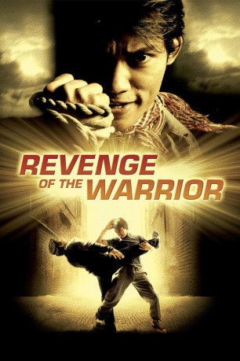

#1603 Revenge of the Warrior
Alternativ: The Protector (Englischer Titel)
 
 IMDB-Wertung: 7.1 / 10
IMDB-Wertung: 7.1 / 10  Metascore: 52
Metascore: 52 
Tierhändler haben Khams Familie zwei Elefanten gestohlen. Um den Ruhm seiner Familie aufrecht zu erhalten, reist er den rücksichtslosen Tierhändlern bis nach Australien hinterher, wo er mächtig und stark versucht auf die Fährte der Bande zu kommen, obwohl ihm das fremde Land große Schwierigkeiten bereitet.
Jahr: 2005
Dauer: 81 Minuten
FSK: 16
Land: Thailand Studio: 3L FilmverleihTonspuren:
Untertitel:
Auflösung: 1080p (1920x1040) Größe: 8140 MB
Genre: Action, Thriller, Drama, Krimi
Regisseur: Prachya Pinkaew
Drehbuch: Napalee, Piyaros Thongdee, Joe Wannapin, Kongdej Jaturanrasamee, Prachya Pinkaew
Soundtrack: Howard Drossin
Darsteller:
 Tony Jaa als Kham
Tony Jaa als Kham Petchtai Wongkamlao als Mark
Petchtai Wongkamlao als Mark- Nathan Jones als T.K.
- Johnny Nguyen als Johnny
 Lateef Crowder als Capoeira Fighter
Lateef Crowder als Capoeira Fighter- Jon Foo als Wushu Fighter
- Damian de Montemas als Vincent
- Nutdanai Kong als Kham, 9 years old
- Don Ferguson als Johnny's Henchmen
- Andrew Lawton als Officer Rick
- Panda Likoudis als Jimmy
- Ann Hu als Madame Rose , uncredited
- Lex Luther als Bodyguard , uncredited
 Ron Smoorenburg als Kham's opponent , uncredited
Ron Smoorenburg als Kham's opponent , uncredited- Eddie Vee als Kham , uncredited
- Bongkoj Khongmalai als Pla
- Xing Jing als Madame Rose
- David Asavanond als Officer Rick
- Sotorn Rungruaeng als Kham's Father
- Amonphan Gongtragan als Goong
- Jintana Arromyen als Massage Girl
- Thanin Banjongkajorn als Kang
- Gianni Belfiore als Vincent's Henchmen
- Sutanai Buyaketu als Suthep
- Nipon Chaisirikul als Gangster's Master
- Sambat the Elephant als Por Yai
- Cholatit Haenphan als Tui
- Apichart Hanbang als Boxing Referee
- Lin Sin Hui als Chal's mother
- Mongkol Kaimook als Johnny's Henchmen
- Jasper Kassidy als Monk
- Nam Young Kim als Mini Mart Owner
- Yun Leng Kua als Gu Zheng Musician
- Ornsiri Kunrajarya als Singer in Safehouse
- John Lamond Jr. als Chief Inspector Lamond
- Uthaiwan Laohaveranith als Madame Rose's Aunt
- Ric Lawes als Australian Secretary General
- Lu Siew Luan als Kang's mother
- Prasit Manaskuljaroun als Chern
- Erik Markus Schuetz als Johnny's Henchmen
- Rene Minkwitz als Fortune Teller's Henchmen
- Kanchan Numwat als Master of Oracle Ceremony
- Heinz Ollesch als Fortune Teller's Henchmen
- Philip George Pfister als Fortune Teller's Henchmen
- Kimball hyunu Pojas als Asian Channel Cameraman
- Sok Pong als Passerby at Sydney Airport
- Winai Poonpermpmpon als Fortune Teller
- Napat Poori als Suthin
- Chan Pornpitakthepkij als Tom Yum goong Restaurant Supervisor
- Kunyaratana Rienjaroensuk als Newscaster
Datei: X:\HD-Eastern-Modern(N-Z)\Revenge of the Warrior (2005, FSK16, 1920x1040).mkv seit 24.07.2015
Festplatte: HD Eastern+Western
 Es gibt insgesamt 76 Filme in der Gruppe 'HD-Eastern-Modern(N-Z)'
Es gibt insgesamt 76 Filme in der Gruppe 'HD-Eastern-Modern(N-Z)'